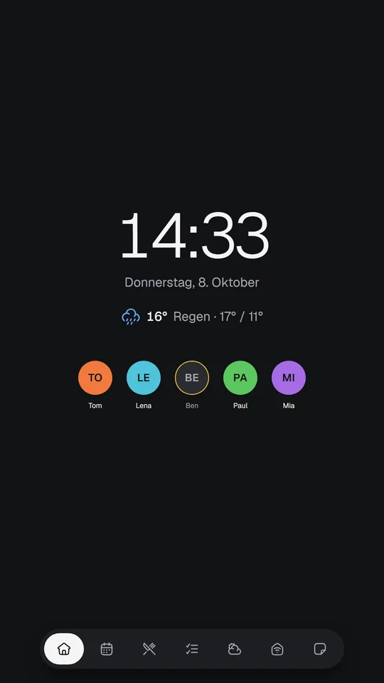
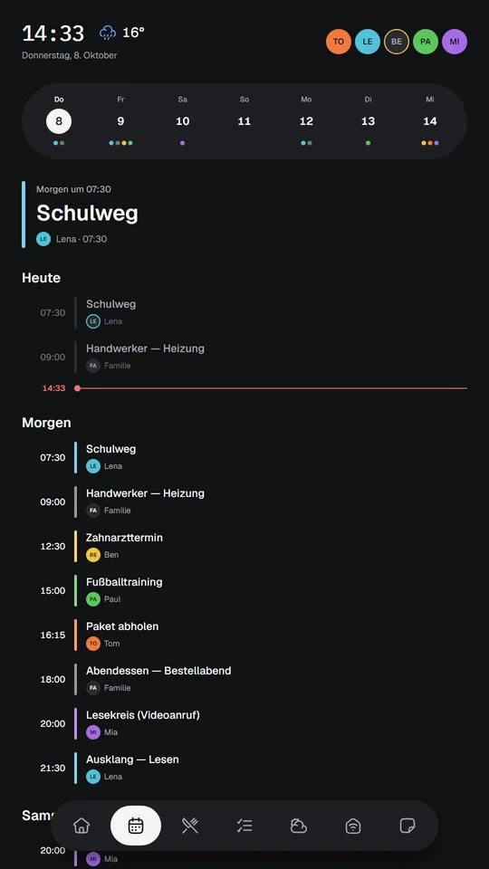
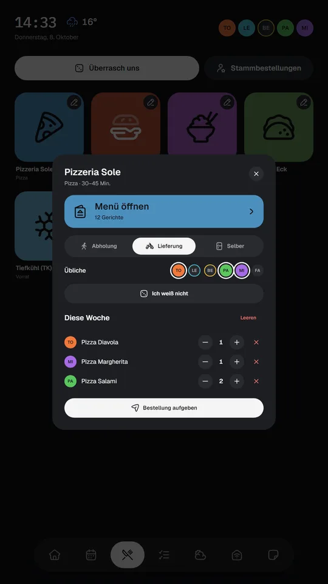

It is reality today.
For years we watched AI get better and better. Today it has arrived in our everyday life as developers. It isn't a vision of the future anymore.
Reality Today is a collection of projects, ideas and blueprints that came out of this new way of building: from a first idea to a working product, with AI as a real partner in the process. Here you'll find what I built, how it works, and the architecture and prompts behind it, so you can build it yourself.
What you find here are recent projects, or renewals of old ones, realized with artificial intelligence in a few days or weekends, often in the evening after work.
ProjectsGitHubProjects



Home Information Screen
A calm wall dashboard for the family on a Raspberry Pi: calendar, weather, who is home, chores, sensors and sticky notes. A blueprint plus the prompts – not the code.
vps-fleet v0.1.0 · default 2 servers · 2 online NAME STATUS CPU MEM DISK ▌web-1 ● online ████░ 82% █████ 97% █░░░░ 23% db-1 ● online █░░░░ 12% ██░░░ 41% ███░░ 60%
vps-fleet
Your whole server fleet in one terminal window: health, processes, services and files for all your servers over plain SSH, with nothing installed on them. The prompts plus the finished Go code.
Which AI model and agent?
Choosing a model for the blueprints: why Opus-class models give the best results, where mid-tier is enough, and tips for Mistral Vibe and other agents.
More on the way
Weekend-sized projects: developer tooling, AI agents and everyday tools for home and family.